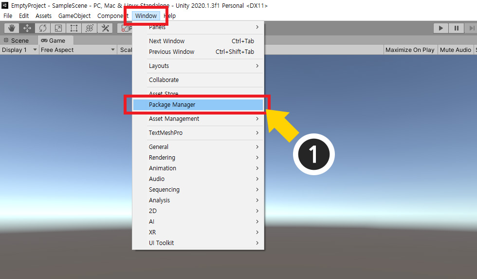
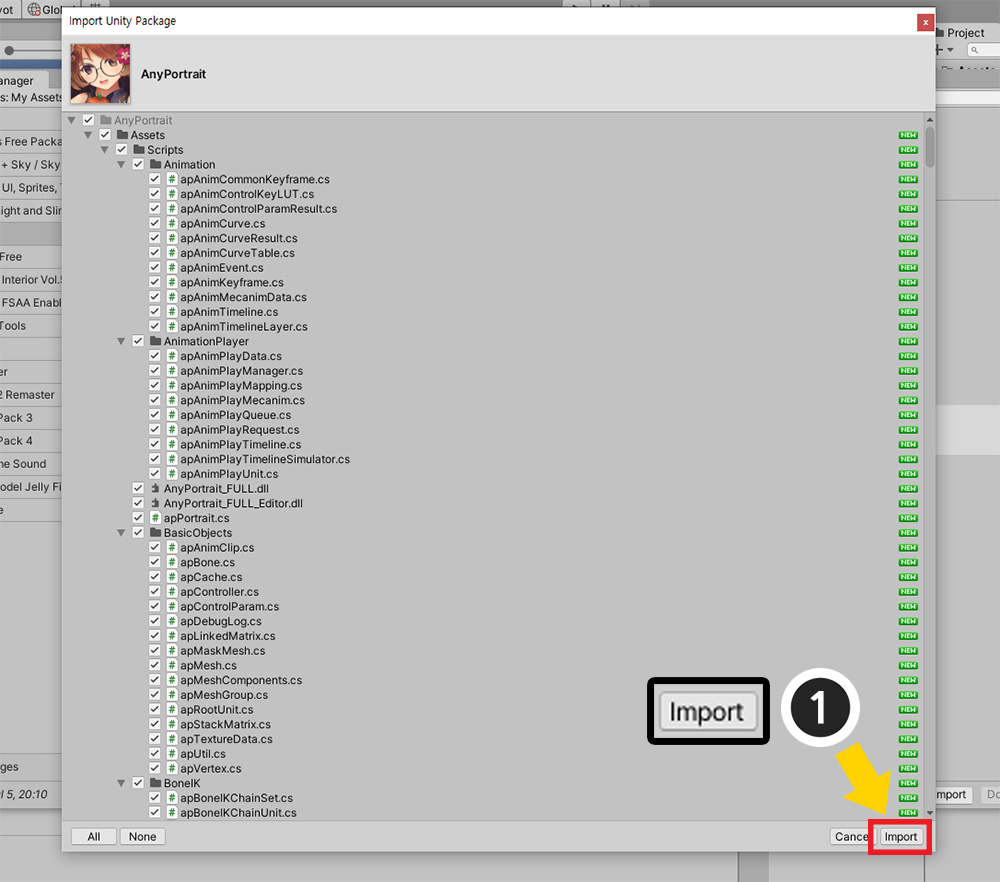
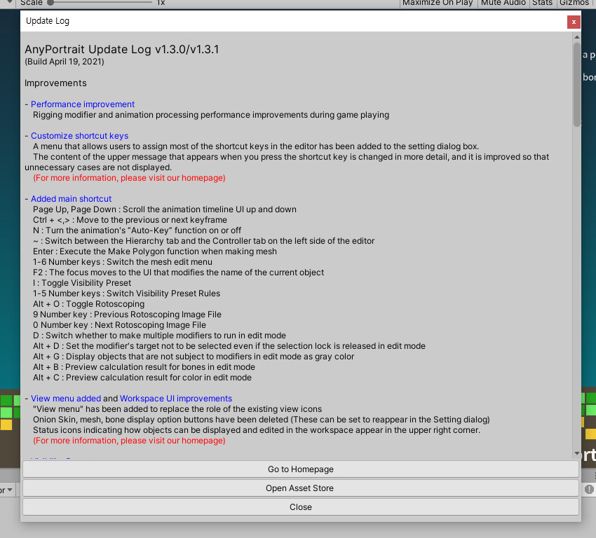

AnyPortrait > マニュアル > インストールと更新の方法
インストールと更新の方法
このページは、「Unity Asset Store」で購入したアセットをダウンロードした後、ユーザーのプロジェクトにインポートする方法を説明します。
このページの説明は、AnyPortraitを含むすべてのアセットに適用されます。
Unityのバージョンに応じてアセットを管理する方法が異なる場合があり、この文書は、Unity2020.1に基づいて作成されました。

「Asset Store」でアセットを購入した場合、購入ボタンが「Open in Unity」ボタンに変更されていることです。
(1) 「Open in Unity」ボタンを押して、アセットをインポートするプロジェクトを開くことができます。

Unityエディタが開いている場合、上記のよう「Package Manager」を開いてください。
(1) 「Window > Package Manager」を開きます。

(1) カテゴリーを「My Assets」に変更します。
(2) 購入したアセットを選択します。
(3) もしアセットが見えない場合は更新ボタンを押すか、エディタを再起動してみましょう。
アセットを購入したアカウントでエディタを実行する必要があります。
(4) 「Import」ボタンと「Download」または「Update」ボタンが右下に表示されます。
- Import : ダウンロードされたアセットを現在のプロジェクトにインポートします。
- Download : アセットをユーザーのコンピュータの指定した場所にダウンロードします。
- Update : 最新バージョンのアセットに更新します。
まだアセットをダウンロードしていなかっ「Download」または「Update」ボタンを先に押します。
それ以来、「Import」ボタンを押します。

アセットの項目の中でどのようなことをプロジェクトにインポートするか尋ねるダイアログが表示されます。
AnyPortraitの場合可能なすべて選択された状態である必要があります。（Demoフォルダは選択を解除してもされます。）
(1) 項目を確認し、「Import」ボタンを押します。

購入したアセットがプロジェクトにインストールされていることがわかります。
もしアセットの最新バージョンが更新された場合にも、同様の方法でインポートをします。
AnyPortrait更新ログを確認
他の多くのアセットと同様に、AnyPortraitも更新された変更点を別のメニューから確認できるように案内します。

Unityエディタの「Window > AnyPortrait > Update Log」メニューを開きます。

「Update Log」ウィンドウで、最新バージョンの変更点を見ることができます。
「AnyPortrait」エディタの設定で言語を変えると、その言語での更新ログを表示することができます。